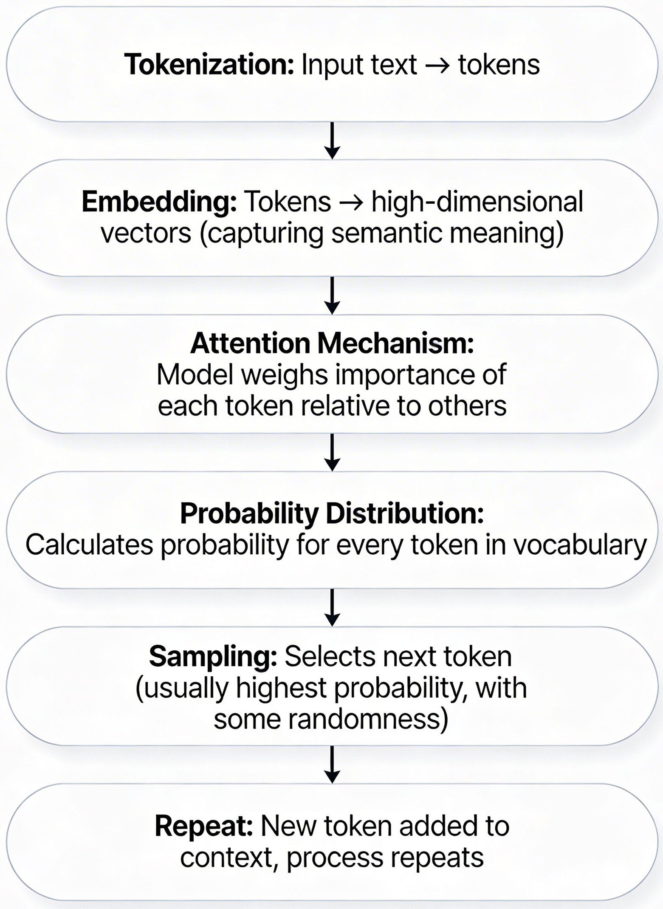
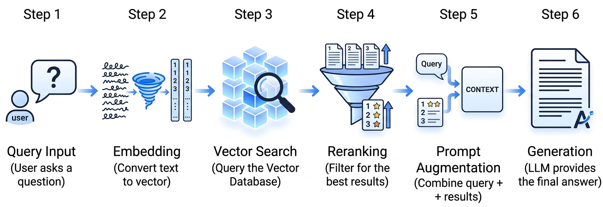
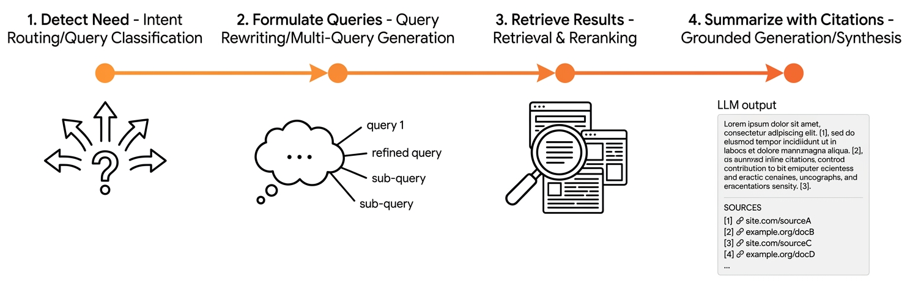

Remark
Please be aware that these lecture notes are accessible online in an ‘early access’ format. They are actively being developed, and certain sections will be further enriched to provide a comprehensive understanding of the subject matter.
1. Understanding Large Language Models#
Learning Objectives
By the end of this section, you will:
Explain how LLMs predict text through probability
Understand modern capabilities (RAG, web search, agents)
Work strategically within context limits
Recognize when to use different LLM architectures
1.1. What Are Large Language Models?#
Large Language Models (LLMs) predict the next word based on context by matching patterns learned from massive training data (billions of words). They excel at pattern-based tasks but don’t “understand” meaning like humans do [Brown et al., 2020].
GPT‑5.3 — Native agentic autonomy and advanced multi‑step reasoning capabilities.
Claude 4.6 (Anthropic) — Optimized for long‑running workflows with an “infinite” dynamic context window.
Gemini 3.1 Pro (Google DeepMind) — Featuring “DeepThink” mode for complex scientific and mathematical discovery.
Grok‑4.1 (xAI) — High‑frequency real‑time web integration with a focus on live platform data.
Llama 4 (Meta) — The industry standard for open‑weight models, featuring improved instruction following and tool use.
Mistral Large 3 — Highly efficient, high‑performance model designed for sovereign cloud and local hosting.
GLM‑5 — A powerful open‑weight reasoning model competitive with top‑tier proprietary systems.
The “Model Parity” Shift (2026)
Leading models have largely converged in core reasoning ability. For most faculty tasks, the “best” model is simply the one integrated into your secure institutional environment (e.g. SHOW-ME-AI) rather than a specific brand name.
1.2. Interactive Exercise: You Be the Model#
Complete this sentence: “The capital of Northern Ireland is ____”
Your task (90 seconds):
Write your top 2–3 predictions.
Assign a probability to each.
Compare with a neighbor.
The Learning Point
Your brain just performed pattern matching from prior knowledge—very similar to what LLMs do with billions of training examples. The key difference is that you can explain why Belfast is correct; LLMs only calculate that it is the most probable next token.
1.3. Tokens and Generation#
1.3.1. What Are Tokens?#
Tokens are the fundamental units LLMs process—not words, but sub-word pieces. Understanding tokens is essential because they determine cost, speed, and context limits for every interaction.
Rule of thumb: ~0.75 words per token (or 1 token ≈ 4 characters in English)
Example 1.1 (Basic examples)
"Hello"→ 1 token"ChatGPT"→ 2 tokens ("Chat"+"GPT")"artificial intelligence"→ 3 tokens
Because models process fragments rather than whole words or mathematical values, the way text is split—tokenization—significantly impacts performance on logic, arithmetic, and data tasks.
Text Example |
Token Count |
Impact on Model Behavior |
|---|---|---|
|
5 tokens |
Sees |
|
3 tokens |
Sub-word tokenization ( |
|
2 tokens |
Common brand names and technical terms are optimized into fewer tokens to save processing space and improve efficiency. |
Try it yourself: Experiment with the OpenAI Tokenizer to see how your text is split.
1.3.2. How LLMs Generate Text: The Prediction Pipeline#
LLMs generate responses through a token-by-token prediction loop:
{kind=link}

Fig. 1.1 Simplified generation pipeline: text → tokens → embeddings → attention layers → probability distribution → sample next token → repeat.#
Step-by-step process:
Tokenization: Input text is broken into tokens
Embedding: Each token is mapped to a high-dimensional vector (its “meaning” in mathematical space)
Attention: Model computes relationships between all tokens (which words matter for predicting the next one?)
Probability distribution: For each possible next token, the model assigns a probability
Sampling: One token is selected based on those probabilities
Repeat: The selected token is appended, and the cycle continues
Example 1.2 (Tokenization Example)
For the prompt “The capital of Canada is ____”, the model might assign:
Ottawa: 92% ✓Toronto: 5%Montreal: 2%Maple Syrup: 0.001%
The model selects Ottawa (highest probability), appends it, and moves to predict the next token (perhaps a period or continuation).
1.4. Understanding LLM Hallucinations#
LLMs do not “look up” facts in a database. Instead, they predict the next token based on statistical patterns learned from training data—functioning like an extremely sophisticated autocomplete system. This fundamental architecture produces fluent, grammatically correct text, but it also leads to a critical problem: the model can generate confidently wrong answers.
Hallucinations occur when the model generates plausible-sounding text that is factually incorrect, outdated, or entirely fabricated. These can include fake citations (e.g., “According to Smith et al. 2023…”), invented statistics (e.g., “47% of researchers report…”), or non-existent event details [OpenAI, 2026].
The root cause lies in how prediction-based systems handle varying levels of certainty. When an LLM encounters a well-represented pattern in its training data—such as “the capital of Canada”—it has seen this phrase followed by “Ottawa” thousands of times, resulting in high confidence and accurate prediction. However, for less common facts like “the capital of Northern Ireland,” the training data contains fewer examples, leading to noisier probability distributions. The critical issue is that the model must generate something—it cannot simply say “I don’t know” unless explicitly trained to do so. As a result, it produces a plausible-sounding answer that may be incorrect, prioritizing fluency and coherence over factual accuracy.
This distinction between pattern-matching and knowledge retrieval is fundamental to understanding LLM limitations. The model optimizes for generating text that “sounds right” based on statistical patterns, not for verifying whether that text corresponds to reality. This is precisely why extensions like RAG, web search, and explicit fact-checking mechanisms have become essential tools for grounding LLM outputs in verifiable information.
Mitigation Strategies
Modern LLM systems can significantly reduce hallucinations through retrieval-based extensions (see Section 1.7). Retrieval-Augmented Generation (RAG) grounds model outputs in your uploaded documents, ensuring answers are drawn from verified sources with explicit citations. Similarly, web search extensions query live internet sources and provide traceable citations, addressing the training data cutoff problem while maintaining transparency about information sources.
However, no technical solution eliminates the need for human judgment. Even with retrieval extensions, you should always verify high-stakes facts against primary sources and treat LLM outputs as drafts requiring your expert validation. The goal is not to replace human expertise but to augment it—using these tools to accelerate research and writing while maintaining rigorous standards of accuracy.
Why This Matters for Faculty
Teaching:
Students get fluent but wrong answers—teach verification skills
Design assignments requiring source citation and AI output evaluation
Research:
Never trust AI references—fake citations are common
Use RAG tools (NotebookLM, Perplexity) that cite actual sources
Everyday use:
Factual queries → web-integrated models (Perplexity, Gemini)
Creative tasks → base LLMs work well (hallucinations matter less)
1.5. Parameters, Quantization, and Context Windows#
Parameters are the internal weights of a model—similar to hardware specs for a computer. Roughly:
7B parameters: faster and cheaper, good for many routine tasks.
70B parameters: better reasoning and nuance, but more expensive.
400B+ parameters: cutting‑edge performance at high computational cost.
Quantization compresses those weights to reduce memory use with minimal quality loss:
Full precision (e.g., FP32): largest and most accurate representation.
4‑bit quantization: up to ~87.5% smaller, making large models runnable on high‑end laptops or workstations.
A practical rule of thumb: start with a smaller, quantized model, and only move up to larger ones if you hit clear limitations.
{kind=link}
Fig. 1.2 Context windows behave like physical desks—limited space where new items push older ones out of view. (Image generated using Google Gemini).#
Model |
Context Window |
Capacity (words, ~0.75 ratio) |
Reference |
|---|---|---|---|
GPT‑5.3 Codex |
400K tokens |
~300K words |
|
Claude 4.6 Sonnet |
1M tokens |
~750K words |
|
Llama 4 Scout |
10M tokens |
~7.5M words |
[AI, 2026] |
Gemini 3.1 Pro |
1M tokens* |
~750K words |
Three Critical Limitations
Recall decay: Models often struggle with information in the middle of very long contexts (“lost in the middle”) [Zhang et al., 2024].
No external memory: They cannot access information outside the current context window unless paired with tools like search or RAG.
Training cutoff: They do not automatically know anything published after their training data cutoff, unless extended with web search or retrieval‑augmented generation.
1.6. Working Within Limits#
1.6.1. Scenario: 300 Abstracts#
Problem: you want to identify themes across ~300 abstracts (~60K words, ~80K tokens). This technically fits into many modern context windows but will suffer from recall decay and shallow patterning if you paste everything at once.
Even if all 300 abstracts technically fit within the context window (the model’s “working memory”), the way LLMs process information creates systematic problems:
“Lost in the middle” effect: The model pays less attention to documents in the middle of a long list, similar to how humans struggle to remember items from the middle of a long sequence. Important patterns buried in the middle get overlooked.
Beginning and end bias: The model gives extra weight to documents at the start and end of your list, distorting which findings seem most important
Shallow analysis: When the model tries to pay attention to hundreds of documents at once, it can only skim the surface—producing vague, generic themes without diving into specifics or catching subtle differences between studies
The result is unreliable synthesis that may misrepresent what your literature actually says.
Strategy 1: Manual Batching (Simpler Approach)
Break your large collection into small groups that the model can analyze thoroughly:
Process in small batches: Analyze 20–30 abstracts at a time so the model can focus properly on each one
Extract specific themes: For each batch, ask for 5–7 main themes with direct quotes as evidence—this keeps findings grounded in what the papers actually say
Collect insights from each batch: Save the themes from each small group while keeping track of which batch they came from
Look for bigger patterns: Once you’ve processed all batches, ask the model to identify overarching themes that appear across multiple batches, plus any contradictions between batches
Double-check accuracy: Go back to a sample of your original abstracts and verify the synthesized themes actually match what the papers say
Strategy 2: RAG-Based Processing (More Advanced Approach)
Use specialized search technology to find and analyze related papers on demand. RAG (Retrieval-Augmented Generation) means the model searches your uploaded documents to find relevant information before answering (see Section 1.7).
Upload to a searchable database: Store all abstracts in a system that can find similar papers based on meaning, not just matching keywords (this is called semantic search—it understands that “climate change” and “global warming” are related concepts)
Group similar papers together: Use the search system to find papers discussing the same topics or methods automatically
Analyze focused groups: Have the model summarize themes and findings within each topically-related group of papers
Ask specific questions: Instead of analyzing everything at once, ask targeted questions like “What do these papers say about student engagement?” The system retrieves only relevant papers and analyzes those
Verify against original sources: Always check that the model’s summaries accurately reflect what the original papers actually said before using these insights in your writing
Both strategies work with the model’s limitations instead of fighting against them—breaking large tasks into manageable pieces the model can handle effectively.
Design Principle
For large or complex tasks, design multi-stage workflows, similar to a research article structure: introduction, methods, results, discussion—each stage small enough to be handled well, but together covering the whole project [Korsholm, 2024].
1.7. Modern LLM Extensions: RAG, Web Search, Agents#
Modern systems increasingly pair LLMs with external tools to address two core problems: limited context windows and out‑of‑date training data. Three common extensions are Retrieval‑Augmented Generation (RAG), web‑integrated models, and agentic workflows.
1.7.1. Retrieval‑Augmented Generation (RAG)#
The core idea of RAG is to combine an LLM with a specialized search engine so that answers are grounded in retrieved data rather than relying solely on the model’s internal parameters [Lewis et al., 2020] [Arslan et al., 2024]. This significantly reduces “hallucinations” by providing the model with a verifiable source of truth. A typical RAG pipeline follows these six steps:
Query Input: The user submits a question (e.g., “Summarize recent work on remote teaching effectiveness.”).
Embedding: The system converts the text query into a high-dimensional vector (a mathematical representation of meaning).
Vector Search: The system compares the query vector against a Vector Database to find the most mathematically similar document passages.
Reranking: A secondary model filters and re-orders the results to ensure only the most contextually relevant passages are passed forward.
Prompt Augmentation: The top-ranked passages are combined with the original user query into a single, enriched prompt (the “Context”).
Generation: The LLM uses this context to generate a final answer that draws on, quotes, and cites the retrieved sources.
{kind=link}

Fig. 1.3 Conceptual pipeline of Retrieval‑Augmented Generation (RAG): transforming a user query into a grounded response through vector retrieval, reranking, and prompt augmentation.#
Example 1.3 (RAG in Practice: Literature Review Assistant)
Without RAG:
Q: “What are the main findings on remote work and productivity since 2020?”
A: “Studies show mixed results. Some research suggests productivity increases, while others show decreases depending on job type and home environment.”
This answer is generic, provides no specific studies or citations, and may be based on outdated training data.
With RAG:
User asks the same question.
System searches your uploaded papers (e.g., 50 PDFs from your Zotero library).
Retrieved passages: “Aksoy et al. (2023) found that remote work saved an average of 72 minutes per day in commute time, increasing elective work hours…” and “Brucks & Levav (2022) demonstrated through randomized experiments that video conferencing inhibits ideation compared to in-person collaboration…”
LLM answers: “Based on your library, Aksoy et al. (2023) found a net gain in productivity due to commute time savings, while Brucks & Levav (2022) found that remote creative roles may suffer because video communication narrows visual focus and inhibits broad ideation. See papers ‘Aksoy_Remote_2023.pdf’ and ‘Brucks_Nature_2022.pdf’ in your library.”
Benefits: answers grounded in YOUR sources, accurate citations you can verify, works with your growing library, and reduces hallucinations by staying grounded in actual documents.
Example 1.4 (RAG in Practice: Grant Proposal Assistant)
Without RAG:
Q: “What are NSF’s priorities for environmental research in 2025/2026?”
A: “NSF typically funds research on climate change, biodiversity, and sustainability.”
This answer is vague, provides no specific program details, and may cite outdated priorities.
With RAG:
User asks the same question.
System searches uploaded NSF program solicitations (you uploaded 3 relevant PDFs).
Retrieved passages: “NSF 25-524: The Partnership to Advance Conservation Science and Practice (PACSP) emphasizes collaborative research between practitioners and academics…” and “NSF 25-512: The BRITE program prioritizes ‘Pivot’ tracks for researchers entering new environmental fields…”
LLM answers: “Based on the latest solicitations you provided, NSF priorities include the PACSP (NSF 25-524), which focuses on conservation sustainability through academic-practitioner partnerships, and the BRITE program (NSF 25-512), which supports ‘Pivots’ into new environmental research domains.”
Benefits: accurate program details from official sources, saves hours of reading solicitations, provides direct codes you can use for compliance, and stays current as you upload new PDFs.
Academic Use Cases for RAG
Literature review helpers: Tools such as Elicit, Consensus, Scite, and SciSpace index large paper collections, retrieve key passages, and let the model synthesize findings, methods, or limitations for you.
Library discovery systems: Major academic platforms (e.g., Scopus AI, Web of Science Research Assistant) now layer RAG on top of catalogue and database search, offering concise summaries of result sets and “similar article” suggestions.
Visual discovery and citation mapping: Services like ResearchRabbit and Litmaps use RAG‑style retrieval plus citation networks to surface related work, co‑authorship patterns, and “seed” papers to explore.
Institutional knowledge bases: Departmental or campus assistants can search policies, past syllabi, committee documents, and internal reports, then draft tailored summaries, memos, or policy proposals grounded in those documents.
Course and tutoring support: Course‑specific assistants, built on your slides, readings, assignments, and lecture transcripts, provide context‑aware explanations and feedback without relying on the open web.
1.7.2. Web Search Integration#
Web‑integrated models extend RAG to the public web rather than a curated corpus. They issue live queries and ground answers in retrieved pages.
The workflow follows a sophisticated pipeline of intent and synthesis:
Detect Need (Intent Routing): The model classifies the user query to decide if it requires real-time data (e.g., “latest NSF guidelines,” “2026 enrollment numbers”) or can be answered from internal weights.
Formulate Queries (Query Rewriting): Instead of a simple search, the system generates multiple optimized search terms or sub-queries to capture the most relevant results.
Retrieve Results (Retrieval & Reranking): The system fetches web pages and applies a reranking model to filter out “noise” (ads, irrelevant SEO pages) and prioritize high-quality information.
Summarize with Citations (Grounded Generation): The model reads and synthesizes the top results, generating a response that utilizes inline citations linked to the specific source documents.
This pattern powers tools such as Perplexity, Bing, and SearchGPT, as well as research-oriented modes in Gemini and Claude.
Some systems use agentic search or “deep research.” Instead of a single search and summary, the model runs iterative cycles. These cycles involve following citations, comparing sources, and refining queries to answer complex questions. For relational queries (e.g., “Which companies acquired AI firms in 2024, and in which regions?”), newer approaches such as GraphRAG [Peng et al., 2026] use knowledge graphs on top of retrieval to map entities and relationships across the web.
{kind=link}

Fig. 1.4 Conceptual illustration of web search integration: the model issues queries, retrieves web pages, and then generates answers grounded in those results.#
Example 1.5 (Web Search in Practice: Conference Deadlines)
Without Web Search:
Q: “When is the deadline for ICML 2026?”
A: “ICML typically has abstract deadlines in late January and full paper deadlines in early February.”
This answer provides general patterns but lacks the specific, actionable dates needed for submission.
With Web Search (RAG):
User asks the same question.
System searches the official ICML 2026 Dates and Deadlines and submission portals.
Retrieved results: The ICML 2026 Call for Papers confirms: “Abstract deadline: January 23, 2026; Full paper deadline: January 28, 2026.”
LLM answers: “For ICML 2026, the abstract deadline was January 23, 2026, and the full paper deadline was January 28, 2026. You can find the full schedule on the ICML official site.”
Benefits:
Grounding: Avoids hallucinations by tethering the answer to real-time facts.
Accuracy: Captures exact dates that fall outside the model’s static training data.
Verification: Provides a citation trail, allowing users to verify high-stakes information at the source.
Dynamic Awareness: Can identify last-minute extensions or policy changes (e.g., the new optional attendance policy for 2026).
When Faculty Should Use Web-Integrated Modes
Time-sensitive facts: funding calls, policy updates, current events for class discussions.
Cross-checking claims: verifying statistics or references from a base model that might hallucinate.
Gathering diverse perspectives: scanning multiple sources quickly before you dive deeper yourself.
Remark
Web search can introduce noise and bias; treat outputs as starting points and verify key claims in primary sources, especially for scholarship and teaching materials.
1.7.3. Agentic AI#
Agentic AI (or “agents”) refers to systems where an LLM not only generates text but also plans, chooses tools, and executes multi-step workflows on your behalf.
Instead of answering once and stopping, an agent can:
Break a request into sub-tasks.
Call tools such as code interpreters, file readers, web browsers, or databases.
Loop, check for errors, and refine its own outputs.
Example 1.6 (Agent Workflow)
Task: “Analyze climate data trends from 2020–2024 for my region and produce a 2‑page summary with figures.”
Possible agent steps:
Locate or ask you to upload relevant climate datasets.
Clean and transform the data (e.g., handle missing values, subset to your region).
Write and execute analysis code (e.g., Python or R) to compute trends.
Generate figures (time series, anomalies, maps).
Draft a structured narrative (methods, results, interpretation) with references to the figures.
If a step fails (code error, missing data), adjust and retry.
Common examples include GPT‑style code interpreters, Copilot with data tools, and Claude with tool use enabled.
When to Use Agents (vs. Simple Chat)
Use a basic chat model when you need explanation, brainstorming, or light editing.
Use an agent when the task is:
Multi-step (e.g., explore → analyze → visualize → summarize).
Tool-heavy (code, spreadsheets, APIs, file conversion).
Iterative (needing repeated checking and adjustment).
For research and data-heavy teaching, agents can function as a junior assistant: competent but requiring your oversight and validation.
1.8. The Persistent Boundaries of Context#
Even with major advances in tools like retrieval-augmented generation (RAG), web search integration, and multi-agent systems, large language models (LLMs) are still limited by how much context they can handle at once. Each of these methods helps extend what models can “remember,” but none fully removes the boundary. RAG, for example, gives models access to outside information and often outperforms direct answers from the model itself [Gao et al., 2026], especially in conversational tasks [Li et al., 2025]. Still, RAG can introduce more errors when it retrieves too much or irrelevant information [Gao et al., 2026]. Models with very long context windows—some now reaching up to 10 million tokens [Li et al., 2025]—seem impressive, but in practice, accuracy tends to drop well before that point [Leng et al., 2024]. Multi-agent systems, where several AI “agents” share the workload, can boost performance by about 10% [Liu et al., 2025, Zhang et al., 2024], yet they face coordination problems when information gets mixed or lost [Zhang et al., 2024].
These limits reflect both computing costs and how LLMs process information. Handling large windows of text is computationally expensive [Liu et al., 2025], and even when it’s possible, models often don’t use that extra context very efficiently [Packer et al., 2023]. Hybrid systems combining RAG with long-context models are promising: they can outperform long-context models alone on certain tasks [Xu et al., 2024] and manage memory more effectively [An, 2025]. However, they come with higher processing costs and add complexity. Performance also varies by use case—long-context models do better on structured sources like Wikipedia [Li et al., 2025], while RAG approaches handle conversations and scattered information more effectively [Li et al., 2025].
Ultimately, even with models like Gemini offering extended context, the “context window” remains a real constraint. Using retrieval systems or multiple agents helps, but we still can’t give LLMs unlimited memory. This challenge continues to shape how researchers and developers design and deploy these systems in practice.
The “Library” Mental Model
Long Context (e.g., Gemini 3.1 Pro): Like having a giant book open on your desk. You can see everything at once, but if the book is 2,000 pages long, you might lose focus on the details in the middle (Recall Decay).
RAG (Retrieval-Augmented Generation): Like having a librarian who searches the stacks for you. They bring only the few most relevant pages to your desk. It is efficient, but the librarian might miss a connection between two different books.
{kind=link}
Fig. 1.5 Left: Long Context (overwhelmed by 2,000 pages). Right: RAG (librarian fetches relevant docs). (Image generated using Google Gemini).#
1.9. Choosing the Right Capability: Base Model, RAG, Search, or Agent?#
The table below summarizes when each capability is most appropriate for typical faculty tasks.
Task Type |
Recommended Capability |
Privacy & Security Note |
|---|---|---|
Revise a paragraph |
Instruction-Tuned LLM |
Generally safe for non-sensitive text. |
Multi-step data analysis |
Agent with Code Tools |
Sensitive Data: Use secure platforms like Mizzou’s SHOW-ME-AI or approved institutional instances. |
Latest funding calls |
LLM with Web Search |
Safe; uses public data to verify model claims. |
Course-specific Q&A |
RAG System |
Best for Privacy: Use Offline Proprietary Models or local RAG to keep sensitive research papers on your own hardware. |
Drafting emails |
Instruction-Tuned LLM |
Ensure no PII (Personally Identifiable Information) is included in the prompt. |
1.10. Key Takeaways#
LLMs are probabilistic pattern matchers, not omniscient experts. They predict the next token from training data and can hallucinate, especially on niche or emerging topics.
RAG, web search, and agentic AI extend core model abilities. RAG grounds responses in your documents, web search brings current facts, and agents handle multi-step tasks with tools like code interpreters.
Context windows limit what fits in a single prompt. Effective use means batching inputs and designing multi-stage workflows instead of “do everything” prompts.
Match the tool to the task. Use standard chat for drafting, RAG for document-based answers, web modes for live facts, and agents for complex analyses.
Copyright & Privacy Considerations
Generally speaking, you should not upload full-text PDFs from commercial publishers to public proprietary LLM platforms (e.g., the free versions of ChatGPT or Gemini). Doing so may violate both publisher copyright and institutional data privacy policies.
Recommended Alternatives:
Open-Source/Local LLMs: Use tools like Ollama or LM Studio to run models locally on your hardware, ensuring no data leaves your machine.
Institutional Services: Use “Enterprise” or “University” versions of LLMs that include Data Protection Agreements (DPAs) ensuring your uploads are not used for training.
Public Metadata: Limit RAG inputs to Abstracts and Metadata from open databases like arXiv, PubMed, or DOAJ.
Fair Use Snippets: Manually extract and paste only the specific sections (e.g., a “Methods” paragraph) required for the immediate task.
Mizzou’s Walled Garden: Unlike public versions of ChatGPT or Claude, SHOW-ME-AI (Mizzou’s secure instance of Vanderbilt’s Amplify) encrypts and stores data on private servers. This makes it the only approved environment for sensitive tasks like analyzing student work for grading or developing AI tutors without violating intellectual property or privacy laws.
The Cost of a Prompt: In enterprise systems like SHOW-ME-AI, tokens have a direct cost. Currently, pilot users often are allocated a monthly token budget. Learning to write concise, “token-efficient” prompts is not just a technical skill—it is a form of budget management.